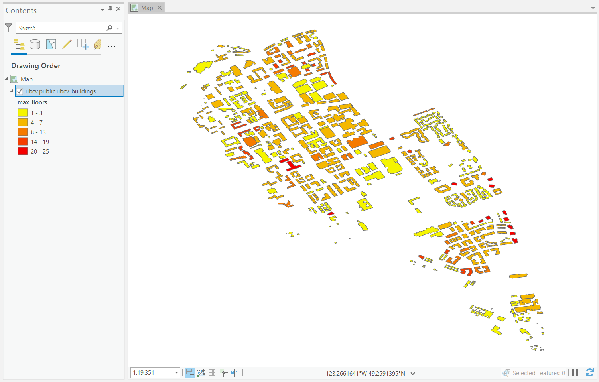
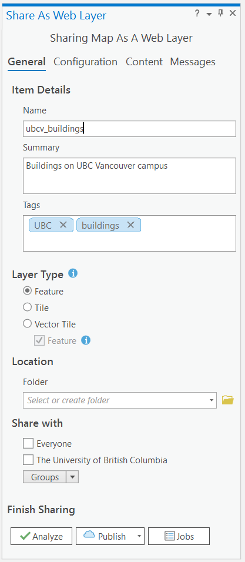
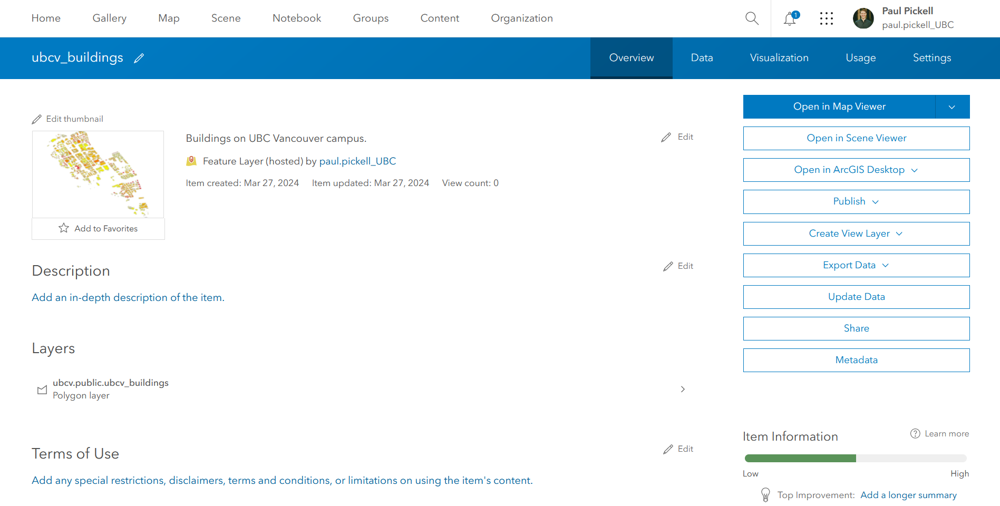
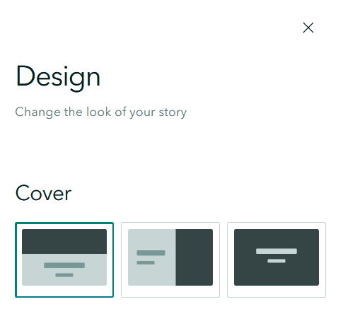
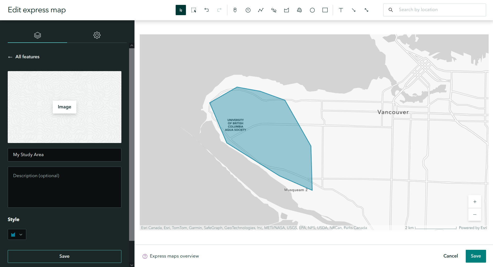

Lab 6 Web Mapping
Written by Paul Pickell
Lab Overview
In this lab you will learn how to make web maps. Web maps are maps that are formatted and stylized for consumption through a web browser. Usually, they include interactive features that simulate the feeling of using other GIS software (e.g., panning, zooming, toggling layers on/off, etc), but with limited analytical capacity. The aim of a good web map is no different than other map: we want to communicate an idea or story. Web mapping gives more control to the end user to explore and visualize the data. So as web cartographers, our role is primarily reduced to decisions about what data to present (e.g., features, attributes, and values) rather than how (i.e., style). We will explore web mapping through ArcGIS StoryMaps. You will learn to publish web maps through ArcGIS StoryMaps, which is integrated with ArcGIS Online. You will create a StoryMap for your FCOR 599 project. The final product will be used to archive your project results on the MGEM Project Library.
Learning Objectives
- Prepare and manage geographic data for display on a web map
- Design and style layers and other elements in an ArcGIS StoryMap
Deliverables
Link to your published ArcGIS StoryMap with the following requirements (50 points):
A cover slide with a title, subtitle, author name, etc. Picture optional depending on which cover format you choose. (5 points)
All major text sections of your final report: Introduction, Study Area, Methods, Results, Discussion, and Conclusions/Recommendations. (10 points)
The sidecar explaining three key concepts/steps from either your Methods, Results, or Discussion sections. (10 points)
An Express Map of your choosing with a title – can be placed anywhere (sidecar, intro, etc.) (10 points)
At least two Custom Maps with titles showing your key results. (10 points)
Reference to any peer reviewed sources as needed, images are properly attributed and captioned. (5 points)
Task 1: Adding content to your ArcGIS Online profile
The mapping functionality available in ArcGIS Online has developed rapidly in recent years, moving from mostly visualization-oriented tools to an expanded suite of processing, analysis, and visual editing tools. ArcGIS Online provides portability, shareability, and more rapid workflow for computers with limited processing power. In this task, we will explore the capability of ArcGIS Online for hosting web layers, which will ultimately allow us to interact with those web layers in web maps.
If you would like to explore the interface and functionality of ArcGIS Online, try adding in some raw or partially processed data from your project, test out some tools, and then make a map from scratch. There are several in-depth tutorials and useful references on the ESRI Website. The resources below are a great starting point:
Web Maps Help Page: https://doc.arcgis.com/en/arcgis-online/reference/what-is-web-map.htm Try ArcGIS Online: https://learn.arcgis.com/en/paths/try-arcgis-online/ Try the New Map Viewer: https://learn.arcgis.com/en/paths/try-the-new-map-viewer/
Step 1: Open ArcGIS Pro and load in one vector layer from your project. Ensure that the layer has a Geographic Coordinate System of WGS 1984 and is not projected. Symbolize it however you like and remove all other layers from the map.


Step 2: Under the Share tab on the top ribbon, you will see two options: “Web Map” and “Web Layer”. Select “Web Layer” and “Publish Web Layer” under the Share tab. The default name will be the name of your map, but give the layer a meaningful name, add a few words of summary, and add some relevant tags. Select “Feature” as your “Layer Type”, then click “Analyze”. If you do not get any warnings, then click “Publish”. You must be connected to the internet in order to publish the content to your ArcGIS Online profile.

If you get warnings saying “24078 Layer’s data source is not supported” then ensure that you have removed the default basemap and hillshade from your map. Also ensure that your feature layer is in the WGS 1984 coordinate system and not projected.
Step 3: Repeat Step 2 with a raster layer from your project, but change the “Layer Type” to “Tile”. Again, ensure that the layer is in the WGS 1984 Geographic Coordinate System and is not projected. “Analyze” and then “Publish” the layer if there are no warnings.
Step 4: After completing Steps 2 and 3, a green message should appear with a URL saying “Manage the web layer”. You can click the URL to take you to the hosted feature/tile layer on ArcGIS Online or you can click here to log in to your ArcGIS Online account. Navigate to the Content tab. You should see both your vector and raster layers listed there as “Feature Layer (hosted)” and “Tile Layer (hosted)”.
Step 5: Click each of your hosted layers and explore their page. Under the Data tab for the Feature Layer, you can look at the attribute table for your layer. You will notice several options on the right side for exporting, updating, and sharing your data, amongst others. Click the “Open in Map Viewer” option. This will take you to ArcGIS Online’s web mapping tool. Take a moment to explore the ways you can process and visualize your data.

Step 6: Navigate back to ArcGIS Pro. Instead of selecting Web Layer, this time select “Web Map”. Give your map a name, summary, and tags, and select your configuration to be “Editable”. Click “Analyze”. You will likely get an error about your projection. This is because all Web Maps on ArcGIS online are required to be in the same projection: WGS 1984 Web Mercator (auxiliary sphere). Make this change for your map and “Analyze” again. Note that your individual layers should not need to have their geographic coordinate system changed. If this error has been fixed, click “Publish”.
Step 7: Go back to ArcGIS Online and go to your Content tab again. You will see several new additions – a Web Map as well as hosted layers and service definitions for everything in your map. Click on your map and view it in the Map Viewer.
Now that you have some layers and maps available, you are ready to make put them in your StoryMap in the next task!
Task 2: Creating your ArcGIS StoryMap
Your Story Map should be written and designed for a lay audience. All Story Maps will be published publicly on the MGEM Project Library website, so this is what people will see when they look at your project.
While you are making your map, there are a few things you should keep in mind. First, this is a standalone presentation (i.e., you will not be orally presenting it to anyone), so all the information you want to convey should be on the screen. Second, remember your audience is science literate but not expert-level. Make your message clear, interesting, and minimize the use of jargon. Thirdly, your product should be polished and professional, with good grammar and clean formatting.
Step 1: Log into to your ArcGIS Online account. Click the Content tab. All online content you have created or imported (maps, scenes, layers, etc.) will appear here.
Step 2: Click the “Create App” button in the top left corner and select StoryMaps or click here to begin creating a new StoryMap. Click the “Publish” button at the top and select “Everyone (public)”. This will allow you to link your story when its finished. Be sure to tick on “Allow duplication”, which will allow your story map to be copied to another user account for archival purposes.

Step 3: Click the “Design” tab at the top. Toggle the “Cover” selection to see how they change and choose one that appeals to you. Next, choose a theme. There are several presets, or you can create your own using the Browse Themes tab. Leave the “Credits” option turned on as this is where you will place your bibliography. Close the “Design” tab.

Step 4: Give your map a title and subtitle. The subtitle should be a punchy one sentence summary of your project. The word “Draft” underneath will disappear once your StoryMap is published. You can also edit your name if you wish.

Step 5: Click the plus sign and select “Text”. Add some text that introduces your project together with a problem statement. You can use some of the text from your final report, but it should be modified to suit a public audience. Do not just copy and paste your final report text into your StoryMap! Repeat this step to add and arrange text for your methods, results and discussion sections.

Double-click or highlight the phrase to bring up the text editing bar. This allows you to bold or italicize your text, change the size, add bullets, and a few more. Play around with these options and see what they do.
Step 6: You can add images by clicking the plus sign again and selecting “Image”. Click your image to bring up the display options and toggle between small, medium, and large. “Float” allows you to move your image around. The six dots should appear again when “Float” is selected. For any image that you add, you need to clearly indicate the source and properly attribute the author. Be sure to caption all images and properly attribute any material that is not your own.
Step 7: Next, we will try adding some maps. There are a few different ways to do this, so we have listed some common scenarios below based on what kind of map you plan to use.
Living Atlas: the ESRI Living Atlas is a collection of maps with pre-made layers on terrain, climate, population areas, imagery and more. Similar to Express Maps, you can use the Living Atlas to add context to your overall study area. You can use layers from the Living Atlas as a standalone or as part of a custom map or express map.

Express Map: these are quick and simple reference maps used to draw boundaries or call attention to general locations. You can use an express map to show your study area and call out simple features by drawing polygons, lines, and points and adding text. You can select different base maps and add a legend if needed, but we recommend keeping express maps very simple. Click the “New Express Map” button at the top right to create an Express Map.

My Maps: these are maps published to your ArcGIS Online account from ArcGIS Pro or created in ArcGIS Online. Once they are published on your ArcGIS Online account, they can be used in your StoryMap interactively! These maps are very useful for sharing information that requires a lot of processing and analysis, unlike an Express Map. For your StoryMap, we expect that you will create
Step 8: In the top right corner, search for a city or town near your study area. On the left side where the editing box is, click the gear symbol for the settings and change the base map to your liking.
Step 9: The top bar gives you options to add points, draw lines or polygons, and add text or arrows. Draw a polygon (freehand) around the area and use the “Style” button to adjust the colors. You will notice there are very few options to customize. Add a text box with the name of your study area. Click “Done” at the bottom of the page to add this map to your StoryMap. Explore the options available for displaying the map on your page.
Step 10: Create a map in ArcGIS Pro, publish it to your ArcGIS Online account, and then add it to your StoryMap. You can also make a web map from ArcGIS Online, but you will still need to upload your feature or raster data to your account first and ensure it is published publicly. Click the plus sign and select “Map”, but this time, select one of your own.
Step 11: Click the plus sign and select “Sidecar” near the bottom. Sidecars are miniature presentations within your story. If you have one topic with multiple pieces of media or are demonstrating a process within your step-by-step, sidecars are a great way to lay this out. You can add slides to your sidecar by clicking the plus button on the lower right, and delete/duplicate/hide individual slides by clicking on the three-dot menu on each slide and selecting your desired option. Click and drag the slides to reorder.

Step 12: Select three main concepts/steps you would like to showcase from your analysis. Using the Sidecar function, provide a quick demo or explanation of each concept/step in a sidecar slide. Each slide should have some form of media (image, diagram, map, screenshot, etc) and text explaining what you are showing.
Step 13: Continue to add any additional elements or other web maps that you want to use to help feature your project. Be sure to refer to the Deliverables section above to ensure your StoryMap meets the minimum criteria we expect for credit. When you are done, ensure that your “Publish” setting is set to “Everyone (public)”. Submit the URL to your StoryMap to the assignment page on the course management system for credit.
If you are told there are permissions issues with your map layers, navigate to your custom maps under the Content tab and click “Share” then “Everyone”, then try to publish your StoryMap again. If this issue persists, also share your layers with “Share” then “Everyone” in the Contents tab.
Summary
In this lab, you were introduced to some of the functionality of ArcGIS Online and ArcGIS StoryMaps. In this example, you were shown how to host your own geospatial data on ArcGIS Online and then access those hosted layers via web maps that can be embedded into an ArcGIS StoryMap. We have really only scratched the surface with web mapping in this short lab. If you are interested in learning more, you should consider reading about leaflet and open layers, two popular free and open source software packages that can be used to make web and publish maps. As well, ArcGIS Pro supports the ability to publish Web Scenes, which is a 3D extension of the 2D web mapping capability that we covered in this lab.
Return to the Deliverables section to check off everything you need to submit for credit in the course management system.
## Warning in readLines(file, warn = readLines.warn): incomplete final line found
## on 'chapterauthors.yml'